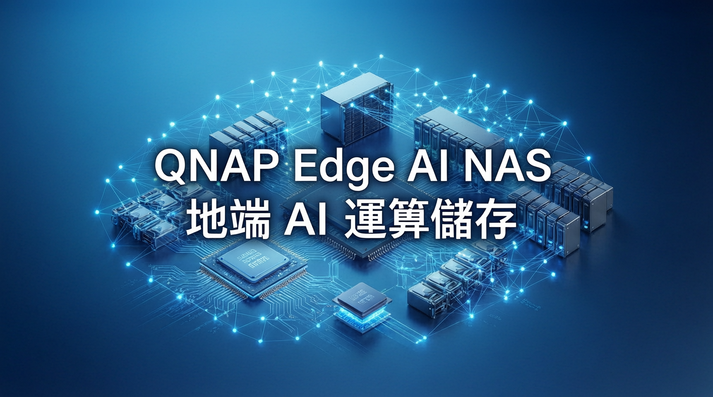

COMPUTEX 2026：QNAP AI NAS 全線出擊，Qsirch 7.1.0語意搜尋 + QuAgent 智慧助理

專為企業核心 AI 平台設計的 12-bay 全快閃（All-Flash）邊緣運算儲存伺服器，搭載 AMD EPYC 7302P 16 核心 32 執行緒處理器，支援最高 1TB DDR4 ECC 記憶體。機身配備 12 個 2.5吋 U.2 NVMe PCIe Gen4 熱插拔硬碟槽，以及雙 25GbE 及雙 2.5GbE 網路介面，能為龐大的 AI 訓練與推論模型提供極致的資料吞吐量。
最大亮點：支援雙 GPU 分工協作架構，一張高 VRAM 顯示卡（如 96GB）作為 LLM 推論主力，另一張負責 RAG 向量檢索或 ComfyUI 圖像生成等輔助任務，確保關鍵資料不出企業防火牆。
Qsirch 7.1.0 全面導入 AI 智能語意檢索技術，用戶不再需要死記檔名，只需輸入自然語言描述即可精準找到語意相關的檔案。更支援圖片、影片與語音檔案自動生成 AI 摘要，以及一鍵自動語音轉文字（Transcription）功能，大幅提升企業多媒體資產與知識庫的檢索效率。
QuAgent 智慧管理助理提供網頁端與行動裝置應用程式，用戶可直接下達指令查詢系統狀態、調整配置或調度系統資源，毋須進入傳統 Web 介面操作。
QNAP 在現場演示了完整的本地端 AI 代理工作流：
整個流程完全在企業內網完成，透過 Container Station 支援 Docker 環境與 GPU 硬體加速，徹底解決資料外洩隱憂。
QNAP 期望藉由 AI NAS 產品線向外界證明，企業不再需要依賴昂貴且具資安風險的雲端 API。只要透過支援性極高的 AI NAS 硬體，便能輕鬆在本地端搭建出具備無限可能的 AI 代理生態圈，同時將資料轉化為極具價值的戰略資產。
Q：什麼是 Edge AI NAS？
A：Edge AI NAS 是專為在地端（不依賴雲端）執行 AI 運算而設計的 NAS 儲存伺服器，企業可在擁有完整資料主權的前提下，安全地部署大語言模型。
Q：與傳統 NAS 有何不同？
A：傳統 NAS 主要用於檔案儲存，AI NAS 則內建 NPU 加速與 GPU 擴充能力，可同時承擔 AI 推論、語意搜尋、Agentic AI 工作負載。
Q：資料安全如何保障？
A：所有運算均在企業內網完成，關鍵資料不出防火牆。QAI-h1290FX 等旗艦機型支援 In-band ECC，確保 AI 推論的穩定性。
QAI-h1290FX 配備 AMD EPYC 處理器、1TB ECC 記憶體、雙 GPU協作，支援企業級 AI 訓練與推論
AI 語意搜尋引擎，支援自然語言檢索、多模態資料處理、一鍵語音轉文字
自然語言指令管理 NAS，毋須進入 Web 介面即可查詢狀態、調整配置、調度資源
所有運算均在企業內網完成，關鍵資料不出防火牆，適合對資安有嚴格要求的企業